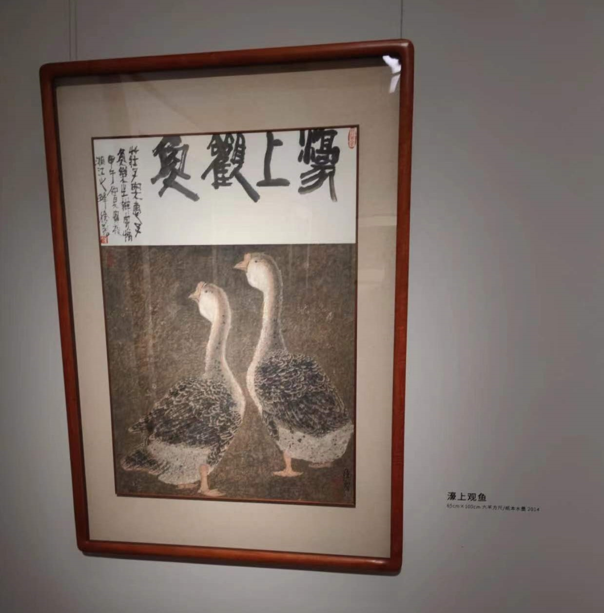
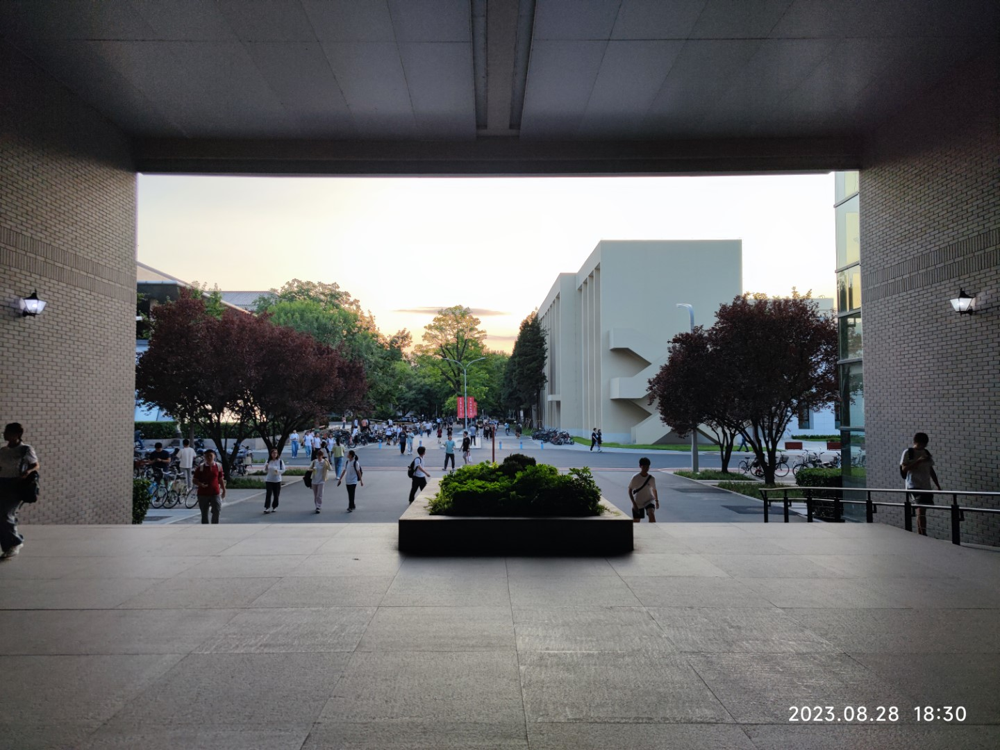

今年
11月17日
从前的读书笔记中一个还算有趣的段落：
近几年来，大家凡提幸福便会说精神的满足，我相信大家都写过这样的文章：“今天我帮助了某人做了某事，细细想，我觉得很幸福。” 真的幸福吗？或者退一步，真有这事吗？不好说。而如果写成“今天我想吃个冰激淋，于是我吃了，我感到满足且幸福”，也对，而且更现实。从物质的简单角度阅读生活，会发现其中也有平凡的、微不足道的幸福。我们不能惟物质的幸福，自然也不应惟精神地幸福着。（2017年3月7日）
11月16日
读《长日将尽》，把生活托付给一位老爷，或者一种理念，终究是靠不住的。史蒂文森真该去看一看齐泽克。
的确——我又何必再遮遮掩掩？——在那一刻，我的心都碎了。
当然了，这也是一个很棒的爱情故事，不坦率的人总是会错过机会，生活走上一个分支以后，就再也回不去了。即使如此，大家总是会宽慰自己说“事到如今，一切都是最好的安排”。然而，当他/她晚年在深夜醒来的时候，内心就真的没有一点遗憾吗？
对自己的感情诚实一点，不要留下遗憾。
11月15日
黑屋乐队《逆旅》的开头非常优秀。
这种长度的歌词，能做到流畅、语法正确、不词穷、不拗口、不滥用助词，是非常少见的，令人想起罗大佑早期的作品。
所有漂泊的沉默的人生都渴望平静 或许你应该明白我到底对什么钟情 如果有一天我可以选择栖身之地 那么我想要 一朵云
11月9日
看《梄山节考》，虽然极端匮乏条件下的弃老习俗、族群对欺骗者的惩罚、性的生殖和非生殖功能，都是人类学的保留节目，但是将这些主题不掉书袋地表现出来，还是很需要技巧的。
它更像是一部动物纪录片，风格上位于《东京物语》的完全反面，一个完美的答案。
11月5日
中国美术馆，徐铭中国画展见一幅《濠上观鱼》，会心一笑：

11月3日
商风陨秋箨，前门登小阁。
11月2日
读《远山淡影》，石黑一雄对于日本的描写有很重的隔膜感，他没有真正在在日本生活的体验，所以他写的其实是“典型日本人”的生活，下面这段是最好的例子
“因为不用和他父亲一起住。” “相反，妮基。我更愿意他和我们一起住。再说，他妻子不在了。日本传统的生活方式一点儿也不坏。” “你现在当然会这么说了。可我敢说你那时肯定不是这么想的。” “可是妮基，你真的不明白。我非常喜欢我的公公。”我看了她一会儿，最后还是笑了笑。“也许你说得对。也许他不和我们一起住我是轻松多了。我记不清了。”我伸出手去摸木门的顶端。一些水汽沾到了我的手指上。我发现妮基在看我，就把手举给她看。“还有些霜，”我说。”
情节设置上，有自传的成分：
“众所周知，初次进行创作的人具有把自己的经历写进作品的强烈倾向，他把自己或者一个替代者放进他的第一部作品中，这样做与其说是由于现成题材的吸引力，不如说是为了摆脱自我后可以去轻装从事更美好的事情。” （纳博科夫）
另外，今天通过了第一个重要考试。
10月26日
读《你一生的故事》，精巧，但语言学只是一个幌子，小说真正想讨论的，是费马原理和它引起的决定论和自由意志问题，作者对此直言不讳。但如果没有这个幌子，它不会有现在的评价。
10月25日
读《神们自己》，第二章，大受震撼； 理者、情者、抚育者毫无疑问是对家庭的有趣解构。 弗洛伊德用武之国也。
10月16日
读《雅克·拉康——阅读你的症状》，摘录
“你究竟想要什么？”“你究竟想从我这里得到什么？”这个绝望的、歇斯底里式的质询乃是无处逃遁的欲望主体直面他者的隐晦性时向自己和他者同时提出的。是的，所有的主体，不论身份、地位如何，只要身处欲望之涌流中，只要摆脱不了以他者的凝视来确认自己，他就必要受到这个他者问题的煎逼，许许多多的时候，面对建制机器的倒错与无常，面对那些身陷幻觉而不自知的主体残余、残渣——更确切地说，“人渣”——我们除了绝望地质询“你究竟想要我怎么样”之外，还有别的路可走吗？！所以，拉康的问号在这里显示了一种非凡的力量，一种让主体直面自身真相的力量。
10月15日
重读《叶甫盖尼·奥涅金》，第八章奥涅金和达吉亚娜的对话令人感动。
10月14日
在中关村看书的时候，我仿佛进入了梦境，尽管我耳闻目睹一切，但还是十分难以相信的。
10月11日
常为不置，常行不休。
10月6日
今日始知“吴音清切令人听”之意。自问，如此则动心否乎？
9月14日
葛公在时，亦不觉异，自公殁后，不见其比。
9月3日
从单调、匮乏、闭塞的生活经验中，绝无可能提炼出放诸四海而皆准的金玉良言。鸡汤不可能熬成咖啡，因为原料就在那里，没有就是没有。
附笛卡尔"临时道德准则"：
- 第一条：遵守法律和习俗，遵循身边最明智的人的看法，特别要看他们怎么做。
- 第二条：选定了一种看法就毫不动摇地坚决遵循，不要有任何怀疑。
- 第三条：永远只求克服自己，不求克服命运，只求改变自己的愿望，不求改变世间的秩序。
8月30日
失眠，需要一段时间来适应新宿舍。
8月29日
千头万绪的事情总要一件一件地做完的。
8月28日
燕园，我之丰、沛，万岁之后，魂灵当归之。

8月24日
昨晚看齐泽克的一篇演讲，是他在与 Jordan Peterson 辩论时的发言，非常精彩。
如果说我们在精神分析学到什么，那便是人类总是能充满创意地毁坏幸福。幸福是个让人混淆的概念，因它基本上仰赖于主体的无能，或未准备面对自身欲望的后果。在日常生活中，我们假装追求那些其实不是真正追求的东西。所以，对我们来说，最终极的不幸就是我们真的得到我们所追求的。所以我同意，拥自由和尊严的人类生命不应只追求幸福，无论我们怎样将追求幸福神圣化，或以之为途径实现内在潜能，我们也要在为快乐地生存之外，寻找生命中更有意义的事。
幸福之外，要追求什么？他从候选项中排除了使命（不可寻求某个不容置疑的权威去给我们目标或任务）和痛苦（不要爱上痛苦，永远不要假设你的痛苦本身可以证明你的本真性。不要再将我们的烦恼归咎于享乐主义自我中心主义）。
8月23日
做题让人感知到记忆力的减退。
晚上读齐泽克《面具与真相》（How to Read Lacan, 2007），他在书里锐评宝可梦Go：
纳粹反犹主义和《宝可梦Go》游戏之间有一个简单的基本的相同之处：虽然《宝可梦Go》将自身呈现为某种全新的、建基于最新科技的东西，它实际上依靠的是一种旧的意识形态机制。意识形态就是扩增幻景的实践。宝可梦迫使我们面对幻象的基本结构，将现实转化成一个意义世界的幻象功能。这就是为什么说宝可梦是我们的未来一因为它早就已经是我们的过去。
那么，这和资本主义有何关系？幻象在资本主义中扮演了什么角色？很明显，资本主义幽灵是一只在它所启动的疯狂活动背后潜伏的宝可梦。
书里还提到，在当代，哲学问题已经逐渐科学化：本体论走向宇宙学，人类学及神学走向进化主义大脑科学…。哲学只剩下一些知识论反思。但是精神分析屹立不倒…。
8月21日
试用Anki，形式大于内容。
8月9日
1971年，福柯和乔姆斯基关于人性的辩论中，主持人问福柯：“您已经拒绝谈论您自己的创造力和自由，我在想这里有没有什么心理上的原因…”福柯对此表现了强烈的厌恶和拒绝。
主持人继续问：“拒绝回答这些问题，与您的社会观念有关吗？” 随后福柯开始转移话题。
即使福柯这样的犀利的学者，也不愿意将他富有冲击力的分析加诸自己的私人生活。生活是易碎品，需要呵护。
8月4日
如果一个人是幸福的，那他今天就一定是幸福的。 如果他不能爽快地肯定自己今天的幸福，又怎么指望他去肯定长远的幸福呢？
Last modified on 2023-11-10